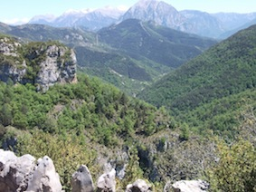

Nuestro entorno
 |
 |
 |
 |
 |
 |
 |  |
{kind=link}
Desde nuestro alojamiento se puede visitar entre otras muchas cosas:
1-PARQUE NACIONAL DE ORDESA Y MONTE PERDIDO y sus 4 valles principales: Valle de ORDESA
Valle de PINETA CAÑON DE AÑISCLO GARGANTAS DE ESCUAIN Principales Pueblos:
AINSA - BOLTAÑA - BIELSA - BROTO - TORLA.
2-PARQUE NATURAL POSETS-MALADETA y sus 2 valles principales: Valle de GISTAIN ( en el valle de CHISTAU)
- Valle de BENASQUE Principales Pueblos: PLAN - SAN JUAN - GISTAIN - BENASQUE - Pueblo Y Estación de
Sky de CERLER - GRAUS - RODA DE ISABENA.
3-PARQUE NATURAL DE LA SIERRA DE GUARA Principales Pueblos: ALQUEZAR - COLUNGO, donde se puede visitar
el Museo de Interpretación del Arte Rupestre. Aquí se puede practicar el descenso de barrancos, el mas famoso
el del Río Vero que parte desde LECINA.
4-PARQUE NACIONAL DE LOS PIRINEOS (FRANCIA) y su Reserva Natural de NÉOVILLE ( lagos de alta montaña)
Principales Pueblos: SAINT LARY - ARREAU.
5-Estación de Sky, PIAU ENGALY (FRANCIA, por Tunel de Bielsa).
6- JACA Y VALLE DE TENA : Aquí podemos hacer una bonita excursión para visitar Lacuniacha,
el Parque Faunístico de los Pirineos.
7- También podemos realizar multitud de deportes de aventura con guías especializados, que Casa La Era recomienda:
http://www.solomonte.com/
http://www.nomadasdelpirineo.com/ofertas.html
http://www.aguasblancas.com/